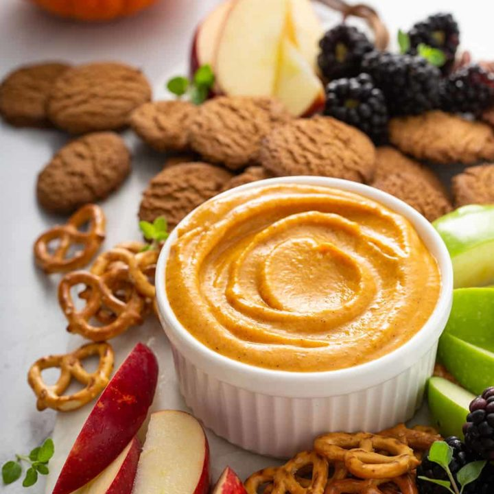

Pumpkin Dip Recipe

This addictive pumpkin dip was first shown to me by my 3rd grade teacher and my family has made it for Thanksgiving every year since.
Ingredients
- 8 oz Cream Cheese
- 2/3 cup Brown Sugar
- 2/3 cup Canned Pumpkin
- 3 teaspoons Maple Syrup
- 1/2 teaspoon Cinnamon
- Apple Slices/li>
- Pretzels
Steps
- Place first 3 ingredients in a bowl and beat with a mixer at medium speed until well blended.
- Add syrup and cinnamon and beat until smooth.
- Cover and chill for 30 minutes.
- Serve with apple slices and pretzels